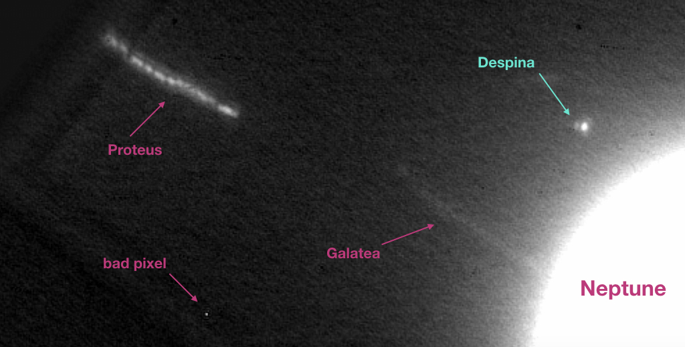

Quickstart¶
Installation¶
Ensure Python version in your environment is >=3.7, then
pip install -r requirements.txt
pip install shift-stack-moons
Description¶
Increase signal-to-noise ratio on small moons around planets in multi-frame observations according to the expected position of the moon from JPL Horizons.
{kind=link}
This image shows the utility of the software. Thirty images of Neptune from Keck’s NIRC2 instrument, each separated by 1-2 minutes, have been shifted according to the orbit of Despina to increase the signal-to-noise of that moon. Despina appears as a point source, whereas all the other labeled moonlets appear as streaks. If you look closely, you can see the individual images that make up Proteus’s streak. Neptune is a streak, too, but it’s so overexposed you can’t tell. The sidelobes of the PSF can be seen on Despina. I compared this stacked PSF to a calibration star PSF and the match is pretty close, so the shift-and-stack is quite accurate.
Usage¶
See ../example-run for an example.